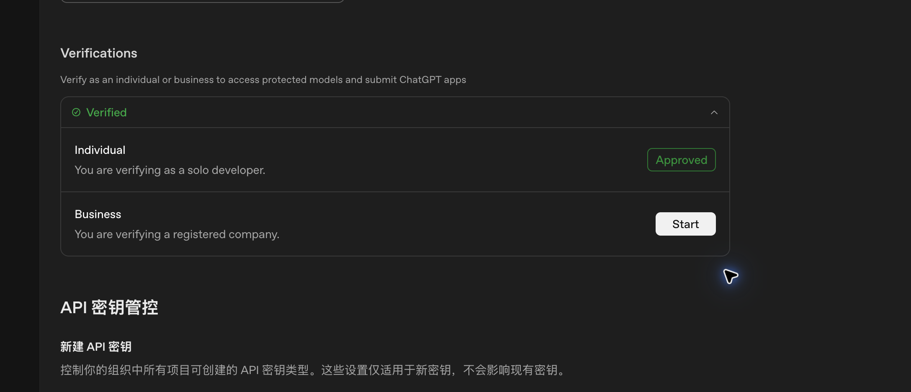
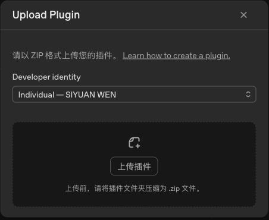

NOTIQUE / 连接自己的 AI 助手
Notique插件发布准备
供发布者核对公开资料、OAuth连接与审核材料。用户图文教程已合并到连接页。
共享 Beta · 云端插件发布准备中开发者身份已通过验证，本站已有只读授权入口。云端插件尚未完成公开发布，也尚未完成老板账号的连接验收。下面标出的安装步骤，需发布者先提供实际可用的安装入口。
当前 Beta 共用一个工作空间。使用自己的 ChatGPT 账号不会自动获得独立的 Notique 资料空间；请仅使用允许 Beta 成员共享的测试资料。
测试用户教程已并入连接页
打开本页图文教程 →。以下是发布者的准备资料；老板使用自己的账号按连接页操作。
发布者：把 Beta 做成可安装的云端插件
1开发者验证已完成
你提供的截图显示个人身份“Verified / Approved”。这一步已通过。它表示具备身份验证条件，插件仍需单独审核与发布。

用户提供的真实验证截图，红圈标出 Approved。
2检查发布资料与现有云端 App
已准备：支持页面、隐私政策、使用条款和本教程。产品介绍为 Notique Beta。Beta 免费、不涉及购买，计划覆盖平台允许发布的所有地区。
以现有 Sites App 为基础确认所有权和支持的发布路径，避免另建一个私人 App 造成两套连接。正式公开前，应核对共享 Beta 资料适合开放的范围；未来个人资料模式还需要用户系统和数据隔离。
3准备好审核材料，再上传发布包
在 Platform 的 Plugins 页面打开上传入口。红圈上方是已验证的开发者身份，下方是 Upload 按钮。

真实上传入口截图。上传创建审核草稿，并不直接公开上架。
下载的插件文件不等于完整审核材料。还需确认兼容的发布包、四个公开页面链接、OAuth 连接、实际演示视频，以及至少 5 个正向和 3 个负向测试案例。需要登录的功能须向审核方提供安全的测试访问方式。
目前实际演示视频、审核访问与真实账号工具测试仍待完成。不要把未测试案例写成已通过，也不要上传主账号密码、生产密钥或真实客户资料。
4审核通过后发布，交给老板验收
检查完整申请内容后，由发布者本人确认平台要求的声明并提交审核。批准后完成 Publish，再将实际安装链接发给老板，让他按上面的用户流程操作。
产品页面和本教程应同步更新实际安装链接和已验证的客户端支持范围。在审核和真实账号验收完成前，保留“发布准备中”的状态。
常见问题
把 MCP 网址填进插件搜索，为什么搜不到？
搜索框查的是可发现的插件列表；MCP 网址是服务端点。插件尚未公开发布时，搜索不到是预期情况。
已登录，为什么还不能读？
需要同时满足：客户端已安装并启用连接、OAuth 身份可用、本站授权有效、该身份有工作空间访问权限。登录或开启授权只完成其中一部分。
老板用自己的账号，会读到自己的资料吗？
目前读到的是获准访问的共享 Beta 工作空间。独立个人资料需要后续接入 Notique 用户系统和权限隔离。